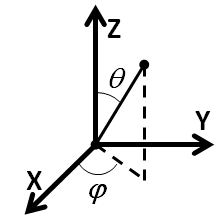

| EPR Imaging Toolbox collection user manual |
iradon_d2d_mstage 3D and 4D filtered backprojection image reconstruction from 1D projections. Sequential 2D reconstructions (multi-stage) are employed. Syntax: image = iradon_d2d_mstage(Pela, radon_pars, recon_pars) Description: 3D and 4D filtered backprojection image reconstruction from 1D projections.
Sequential 2D reconstructions (multi-stage) are employed.
Equal angular projection scheme is required.
Definition of angles is shown in the figure below.

Example: % Generate equal solid angle layout of projections fbp_struct.nAz = 36; fbp_struct.nPolar = 36; fbp_struct.imtype = iradon_GetFBPImageType('XYZ'); fbp_struct.MaxGradient = 1; % maximum gradient (G/cm) fbp_struct.angle_sampling = 'UNIFORM_SPATIAL_FLIP'; pars = iradon_FBPGradTable(fbp_struct); % Radon transformation parameters radon_pars.un = pars.G; % unit vectors of the gradients radon_pars.size = 5; % projection spatial support (cm) radon_pars.nBins = 64; % length of the projection spatial support % Phantom parameters phantom.r = 2.2; % radius of the sphere (cm) phantom.offset = [0.1,-0.1,0]; % offset of the sphere (cm) % use radon_c2d_sphere to generate analytic projections P = radon_c2d_sphere(phantom, radon_pars); % convert serial projection layout into iradon_d2d_mstage layout PP = zeros(size(P,1), fbp_struct.nAz*fbp_struct.nPolar); PP(:,pars.gidx) = P; Pela = reshape(PP, [size(P,1), 1, fbp_struct.nAz, fbp_struct.nPolar]); % Interpolate projections to the uniform angular scheme switch fbp_struct.angle_sampling case {'UNIFORM_SPATIAL_FLIP', 'UNIFORM_SPATIAL'} Pela=iradon_InterpToUniformAngle(Pela, 'imgData'); end radon_pars.ELA = fbp_struct; recon_pars.size = 5; % ignored, radon_pars.size is used instead recon_pars.nBins = 128; % ignored, radon_pars.nBins is used instead recon_pars.Filter = 'ram-lak'; recon_pars.FilterCutOff = 1.0; recon_pars.Interpolation = 'spline'; recon_pars.InterpFactor = 2; recon_pars.CodeFlag = 'C'; recon_pars.zeropadding = 2; % any number >= 1 % call the reconstruction program and display result image = iradon_d2d_mstage(Pela, radon_pars, recon_pars); ibGUI(image); Legend: EPR-IT functions; MATLAB functions; comments.
[1] K.H. Ahn, H.J. Halpern, Spatially uniform sampling in 4-D EPR spectral-spatial imaging, J. Magn. Reson., 185 (2007) 152-158 DOI 10.1016/j.jmr.2006.12.007. See also: |